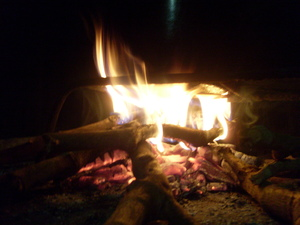
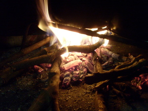

legleg  
/lɔglɔg/
v_rt.
“blaze”
v.
for someone (eglegleg, miglegleg/inlegleg, legleg, agent, eg><ø-) to blaze the fire (egleglehan, inleglehan/migleglehan/pigleglehan, leglehi, location, eg><an-)
Eng. blaze
Online dict status: -
Usage level: B
vi.
for a fire (egkalegleg, nalegleg, actor, egkA><ø-) to smoulder or to blaze
Ka egkalegleg iyan ka hapuy ne egkanlabkanlab wey ke egkeuyag naan e ne hapuy.
Mahaan egkalegleg ka pepil ke egsilaban su manipis wey nahangu nahud.
The paper blazes quickly when burned because it's thin and dry.
Wrd.Gloss: blaze
Eng. blaze; burn
Online dict status: -
Usage level: B
v.
for something (egpakalegleg, nakalegleg, agent, egpAkA-) to cause fire smoulder, or to be a thing (igpakalegleg, impakalegleg, instrument, igpAkA-) which causes smouldering
Eng. smoulder; blaze
Online dict status: -
Usage level: M
adj.
(malegleg, mA1-) flameable
Eng. flameable
Online dict status: -
Usage level: M
Updated by: RJH,TME,QDL,RAA
Last updated: 26/Oct/2009
"legleg" in text "Cooking in Bamboo"
This page last updated: 19/May/2012
Copyright © 2009-2010, Matigsalug Language Christian Association, Inc